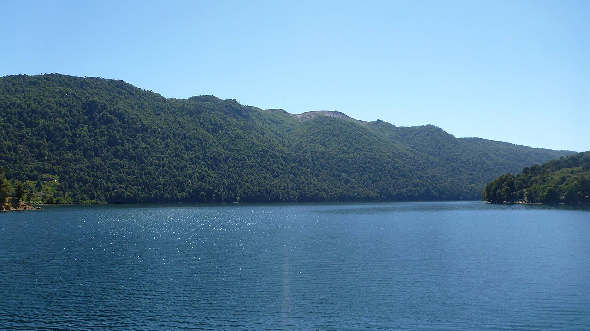

¿Cuándo viajar?
El clima y las actividades disponibles cambian según la temporada. Revisa las condiciones antes de salir y consulta por alertas meteorológicas.
Consejos sencillos para planificar un recorrido responsable y disfrutar La Araucanía con seguridad.

Revisa estos puntos para que tu experiencia sea más cómoda, segura y respetuosa con el entorno.
El clima y las actividades disponibles cambian según la temporada. Revisa las condiciones antes de salir y consulta por alertas meteorológicas.
Usa ropa cómoda y adecuada al clima. Para una caminata, lleva agua, abrigo, protector solar y calzado apropiado.
Respeta los senderos, no dejes basura y sigue las indicaciones de cada lugar. La flora y la fauna son parte del patrimonio de la región.
Ante una emergencia, contacta a Carabineros (133), Bomberos (132) o SAMU (131). Informa siempre tu ubicación y el nombre de la ruta.
Puedes activar estas opciones desde los botones del encabezado. Tu preferencia se guarda para tu próxima visita.
Reduce el brillo de la pantalla y mejora la lectura en ambientes con poca luz. Se activa con el botón “Modo oscuro”.
Aumenta el espaciado y usa una tipografía más amigable para personas con dislexia. Se activa con el botón “Lectura fácil”.
Las opciones de accesibilidad quedan guardadas en tu navegador, así no tienes que activarlas en cada página.
Si tienes dudas sobre rutas, accesibilidad o condiciones del terreno, escríbenos y te responderemos a la brevedad.